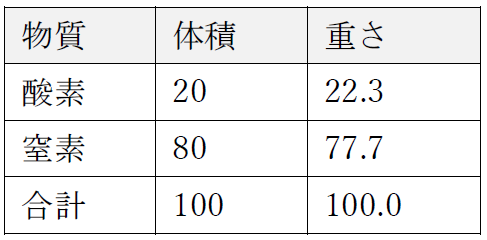
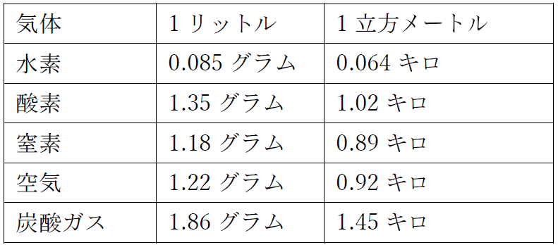

さて、ロウソクからとれた水で、水素と酸素ができるのを見てきました。水素はろうそくからくるもので、酸素は空気からくるらしい、というのもわかりました。でもそうなったら、当然こういう疑問が出ていいはずですね：「どうして空気と酸素とで、ロウソクの燃え方がちがうの？」ロウソクに酸素のびんをかぶせたとき、空気中とは燃焼がぜんぜんちがったのを覚えていますね。どうしてそんなことになるんでしょうか。これはとってもだいじな疑問で、これからなんとかしてこの点をわかってもらうようにしましょう。大気の性質と密接に関わっていて、わたしたちにとってもすごくだいじなんです。
酸素かどうかを調べるなら、ものを燃やしてみる以外にいくつか試す方法があります。酸素の中と空気の中で、ロウソクの燃え方を見てみましたね。酸素と空気とで、燐の燃え方や鉄粉の燃え方がちがうのも見ましたね。でも、ほかにも試す方法があります。いくつかお見せして、みなさんの判断力と経験がもっと高まるようにしましょう。ここに、酸素の入った容器があります。酸素があることを示してみましょう。ちょっとした火花を、この酸素に入れると、前回お目にかかったときに得た経験から、なにが起きるかわかりますね——この火花をびんに入れると、酸素があるかないかがわかります。ほーら！ 燃焼で酸素があるのを証明したわけです。
で、こんどは別のやりかたで酸素があるか試してみましょう。これはとてもおもしろくて便利なやりかたです。ここに気体がつまったびんが２つあります。間に板がはさんであって、気体が混じらないようにしてあります。この板をどけると、気体が混じりだします。「それがどうしたの？」とみなさんは言います。「いっしょにしても、ロウソクみたいな燃焼は起きないでしょう」とね。でも、このもう一つの物質との反応ぶりで、酸素があるのがこうやってわかるんです。原注5-1実にきれいな色の気体ができるでしょう。これで、酸素があるな、というのがわかるんです。同じように、この試験用気体をふつうの空気とまぜて実験してみましょう。こちらには、空気の入ったびんがあります——ロウソクが燃えるような空気です——そしてこっちは、試験用の気体が入ったびんです。こいつを水の上で混ぜてみますと、結果はごらんのとおり。さっきとまったく同じ反応が見られます。これで空気の中に酸素があることが証明されました。
でも、それはいいとして、どうしてロウソクは、空気中では酸素の中ほどよく燃えないのでしょうか？ いますぐそれを考えてみましょう。ここにびんが二つあります。どちらも同じ高さまで気体が入っていて、見たところはどっちも同じです。これらのびんには、それぞれ酸素と空気を入れたんですけれど、いまのところどっちのびんにどっちが入っているかはわかりません。でもここに、試験用の気体があります。こいつをこの２つのびんに使ってみて、この気体の赤くなりかたに何かちがいがあるかどうか、見てやりましょう。さあ、この試験気体をびんの一つに入れてみます。どうなるでしょう。赤くなりますね。つまり酸素があるってことです。では、もう一つのびんで試して見ましょう。でもこっちは、前のやつほど赤くないです。そしてさらに、ちょっとおもしろいことが起きます。この気体２つをとって、水を入れてよく振ると、この赤い気体が吸収されます。そしてこの試験気体をもっと入れてまた振ると、どんどん吸収されていきます。こうやって、赤くする酸素が完全になくなるまでこれを続けましょう。空気が入っても変化しませんが、水を入れた瞬間に、赤い気体は消えて、これをずっと続けて、試験気体をどんどん入れていきましょう。すると、空気と酸素で赤くなった物体を赤くしない、なにかが後に残ります。
こりゃどういうことでしょう？ すぐにお見せしますが、空気には酸素の他に、ここに残った何かが存在しているからなんです。もうちょっと空気をびんに入れてみましょう。これが赤くなったら、赤くする気体はまだ存在するということです。だから気体が赤くならないのは、別にこの物質がなくなったからではない、ということになりますね。
これでわたしが今からなにをいうか、うすうす見当がついてきたでしょう。燐をびんの中で燃やして、燐と空気中の酸素とがつくった煙が凝集したとき、燃えていない気体がかなり残りました。この赤い気体が手をつけない部分を残したように。あのとき、燐が手をつけられずに残ったのも、この赤くなる気体が手をつけられなかったのも、同じものです。そしてこれは酸素ではなく、それでいながら大気中にあるんです。
というわけで、こういうやり方で、空気を構成する物質二つをこうやって選り分けられます——ロウソクや燐やその他もろもろを燃やす酸素と、そういうものを燃やさないこのもう一つの物質——窒素です。この空気のもう片方の部分は割合がずっと大きくて、調べてみると、とても興味深い物体です。すさまじく興味深いですね、でもあなたたちは、つまらないよ、と言うかもしれない。確かにある意味ではつまらないです。派手に燃えたりしてくれませんから。ロウソクで試してみても、水素みたいに燃えないし、酸素みたいにロウソクのほうを燃やしたりもしません。どうやってみても、燃えもしなけりゃ燃やしもしない。火も起こさない。ロウソクを燃やすこともない。それどころか、燃焼をすべて止めてしまいます。こいつの中で、ふつうのままだと燃えるものはなにもありません。匂いもない。ツンともしない。水にも溶けない。酸でもアルカリでもない。われわれの器官に対しても、まったく何の影響も与えません。だからみなさん、こうおっしゃるかもしれません。「そんなの、なんでもないよ。化学的な関心を向ける価値もない。そんなものが空気中でなにをしてるんだろう？」
しかぁし！ そこで観察される原理から、実にすばらしく見事な結果がわかってくるんですな。もし窒素のかわりに、というか窒素と酸素のかわりに、空気が純水酸素だったとしましょう。どうなります？ 酸素のびんの中で鉄に火をつけると、全部燃え尽きるのはよくわかりましんたね。鉄のストーブの中で火をたいたら、空気が酸素なら炉はどうなっちゃうか考えてみてください。ストーブのほうが石炭よりも派手に燃え上がっちゃいます。ストーブそのもののほうが、その中で燃やす石炭よりもずっとよく燃えるからです（訳注：ここでよい子のみなさんは、当然疑問を持たなきゃいけない。もし鉄のほうがよく燃えるのなら、どうして空気中で石炭は燃えるのに鉄は燃えないの？ わかるかな？ 「よく燃える」ってどういう意味だろう？）。蒸気機関車の中に火を入れるなんて、燃料でできた筒型容器の中に火を入れるのと同じになります。窒素はそれを抑えて、火が控えめで使い物になるようにしてくれます。そしてそれと同時にこれだけ量があるので、ごらんのようにロウソクから出てくる煙を運び去ってくれて、空気中一帯にまき散らして、それを人間にとって偉大ですばらしい目的を果たしてくれるような場所に運んでいってくれるんです。たとえば植物の維持とかね。一見すると「ああ、これはまるっきりつまらないものだよ」と思うかもしれませんが。この窒素は、ふつうの状態では不活性です、最強の電気力でも使わないと、窒素は大気中のほかの元素や、その他まわりにある元素と直接結びついたりしません。これはまったく不活性で、つまりは安全な物質だと言っていいでしょう。
が、その結果をお見せする前に、まず空気そのものについてお話ししときましょう。大気中の空気の構成を、百分率でこの表に示しておきました：
表 空気の構成
これは酸素と窒素の量について、大気のきちんとした分析です。この分析によると、体積で見たら大気５リットルには酸素１リットルしか含まれず、窒素は４リットルというか４単位分含まれることになります。それが空気の分析です。窒素がそれだけあって酸素を薄めて、ロウソクにしかるべき燃料が伝わるようにして、肺が健康かつ安全に呼吸できる大気ができているわけです。大気が、ロウソクの炎が燃えるのにちょうどよくしておくのと、わたしたちが呼吸できるよう酸素をちゃんとしておくのとは、同じくらい大事なんですな。
でもこの大気についてです。まず、この気体の重さをお話ししましょう。窒素１リットルは１・１８グラムの重さがあります。一立方メートルだと０・８９キログラム。窒素の重さはそのくらいです。酸素のほうが重い。１リットルが１・３５グラム、１立方メートルだと１・０２キログラム。空気１リットルは１・２２グラムで、一立方メートルは０・９２キログラムになります。
何回かみなさんからきかれたことで、聞いてくれてわたしとしてはとてもうれしいのですが「気体の重さってどうやってはかるの？」というのがあります。お見せしましょう。単純だし、とても簡単にできます。ここにてんびんがあって、銅のびんがあります。できるだけ軽く作ってあって、しかもしかるべき強さを持っていて、ろくろできれいに仕上げてあって、完全に気密になって、止め栓がついててあけたり閉じたりできます。今はあけてあって、だからこのびんは空気がいっぱい入っています。
で、てんびんをうまく調整して、びんがこの状態だと、むこうの重りとつりあうようになってます。さて、ここにポンプがあります。こいつでこのびんに空気をつめこんでやりましょう。こうやって、ポンプで空気をはかって、ポンプ何押しか分の空気を押し込んでやりましょう。［ポンプが20回押されてその分の空気が入る］。栓を閉じて、てんびんにのせましょう。びんが下がりますね。さっきよりずっと重くなったわけです。何の重みでしょうか？ ポンプで押し込んだ空気の重さですね。空気の体積は同じだけれど、無理に押し込んだから、同じ体積でもずっと重い空気になっているわけです。そしてこの空気がどれだけの重さか、きちんと見当がつくように、こっちではびんを水でいっぱいにしてみました。あの銅の容器を開けて中身をこっちのびんに移して、空気をもとの状態に戻させてやりましょう。それにはこうやって、きつくねじこんでやって、栓をねじるだけで、するとほら、ごらんのとおり、びんに押し込んだポンプ20押し分の空気の体積です。そしてこれまでまちがいなくやってきたのを確認するために、びんをまたてんびんに戻してやって、もとの重さでつりあうか確認しましょう。それがつりあえば、きちんと実験をできたのがわかるはずです。ほら、つりあいました。だからああいうふうにして押し込まれた、追加の空気の重さがわかるわけです。そしてここから、空気の１立方メートルは0.92キロだというのがわかるんです。
でもこんなわずかな実験では、この自称の文字通りの真実すべてをとても伝え切れません。これがもっと大量になるとどんなに積み上がるか、すばらしいものがあります。この体積の空気（１リットル）は1.22グラムです。じゃああの上のほうにある箱の中身の重さはどのくらいだと思いますか？ あの箱の中の空気は１キログラムあります——丸ごと１キロ。そしてこの部屋の中の空気全部の重さも計算しました。ほとんど想像もつかないでしょうけれど、１トン以上あるんです。重さは実に急速に増えて、そして大気の存在は実に重要で、その中の酸素や窒素、さらにはあちこちものを運ぶという役割、さらには悪い蒸気を運んで、害をなさずに役にたつような場所まで運んでいってくれるというのは、実にだいじなんです。
空気の重さについて、いまちょっと説明したついでに、それがどういう影響をもたらすかもちょっと話しましょうか。みなさんこの話をきく権利があります。そうでないと、理解が十分になりませんから。こういう実験は覚えていますか？ 見たことあります？ 仮にさっきびんに空気を詰め込むのに使ったみたいなポンプを使って、それをなんとかうまいこと、わたしの手に使ってみましょう。この手は空気の中を軽々と動き回って、ほとんどなにも感じません。空気にそれなりの抵抗があるんだというのを確信するには、思いっきり手を動かしてみてやっとどうにかなるくらいです。でもここに手を置きますと［とポンプの口に手を置いて、ポンプで吸い出して見せた］さあどうなるでしょう。どうして手がここにくっついていて、そのままポンプを持ち上げたりできるんでしょうか？ そしてほら！ 手を引き離すのもむずかしいのはどうしてでしょう？ なぜかな？ それは空気の重さ——上にある空気の重さのせいなんです。
別の実験をしてみましょう。こっちのほうがもっとわかりやすいかもしれません。膜がこのコップの口のところに張ってあります。こいつの下の空気を吸い出すと、別の形で影響がわかるでしょう。いま、てっぺんはかなり平らですけど、でもポンプをほーんのちょっとだけ動かしてみましょう。さあどうなるでしょうか。へこみましたね。内側にくぼんでます。さあ、膜はどんどんへこんできますよ。いずれたぶん、へこみすぎて、上から押してくる空気の力で破けちゃうでしょう ［膜はついに、大きな音をたてて破れる］。さあいまのは完全に、上から押してくる空気の重さのせいで起きたんですね。
なぜそうなるのか、簡単にわかるはずです。空気の中で積み上がっている分子は、ここにある立方体と同じで、それぞれお互いの上にのっかっているわけです。この上の４つが下の一つに乗っかっているのはすぐわかりますね。下の一つをとったら、他のが全部一つ下に下がります。空気でも同じことです。上の空気は下の空気にささえられて、下から空気がポンプでとられちゃうと、わたしが手をポンプの上においたり、膜の例で見たりしたような変化が起きるわけです（訳注：このファラデーせんせいの説明をどう思う？ もしそうなら、コップを横にしたらどうなるだろう。）。もっといい例を見せましょう。このびんのてっぺんに、インドゴムの膜をゆわえました。これでびんの中から空気をとってみましょう。そして見ていると、インドゴムは上の空気と下の空気の間の仕切りになるわけですな——ごらんの通り、ポンプを動かすと、圧力が見えてきます。さあ、どこに行くかみてください。このびんの中には、わたしがこうして手を入れることもできます。でも、結果は上の空気の偉大で強力な働きで起きているんです。不思議な現象が見事に示されてますね！
今日、わたしが終わったらあなたたちもこいつを引っ張ってみてくださいな。小さな道具で、空っぽのしんちゅう製半球が、ぴったりあわさるようになっています。そしてこいつには管と栓がついていて、ここから中の空気を吸い出せるようになってます。そして中に空気があれば、こんなに簡単にこいつを引き離せるんですが、こうやってだんだん空気をぬいていくと、あなたたち二人がかりでも、だれもこいつを引き離せないのがわかりますよ。空気がぬかれると、この容器の表面一平方センチごとに、重さ１キロかそこらを支える勘定になります。この大気の圧力に勝てるかどうか、みんな自分の強さをすぐに試せますよ。
はい、ここにまたいいものがあります——男の子のおもちゃの吸盤ですが、科学者の手でもっと洗練してあります。われわれ子供は、おもちゃをもってきてそれを科学にしてみる権利がじゅうぶんにあるし、同じようにこんどは科学をもってきてそれをおもちゃにしてもいいんです。ここの吸盤は、インドゴムでできてます。こうしてテーブルにくっつけると、すぐにくっつくのがわかります。なぜくっつくんでしょう。あちこちすべらせることはできます。それなのに、引っ張り上げようとすると、いっしょにテーブルがくっついてきそうですね。あちこちすべらせれても、はずそうと思ったらテーブルの端までもってこないとダメです。こいつが押さえ込まれているのは、上の空気の圧力だけのおかげです。いくつかあるので、二つとって押しつけてみると、ほーらこんなにしっかりくっつきます。そしてもちろん、もともと考えられた通りに使ってもいいですね。窓にくっつけたり、壁にくっつけたりして、一晩ほど張り付いたままになって、そこに好きなものをかけておけるわけです。
でも、きみたち男の子には、家でやれる実験を見せてあげたほうがいいですね。そこで大気の圧力を示すすてきな実験です。ここに水の入ったタンブラーがあります。もしこのタンブラーをひっくり返して、それでも水がこぼれないようにして、しかも手で押さえたりしないで、単に大気圧を使うだけでそれをやってごらんといったら？ できるかな？ ワイングラスを持ってきて、水を半分でもいっぱいでも入れましょう。そしててっぺんに平たいカードをのせます。ひっくり返して、カードと水がどうなるか見てください。水のせいで空気は入れません。ふちの毛管現象のおかげで、空気は出たままです。
以上で、たぶん空気が物質であるということについて、正しい認識をしてもらえたと思います。そして、この箱に空気が１ポンド入っているとか、この部屋には１トン以上の空気があると言えば、空気というのがかなりのものだ、と思うようになりはじめてくれるんじゃないですかね。抵抗があるんだということを納得してもらうのに、もう一つ実験をしてみましょう。空気銃のすばらしい実験があります。実に簡単に見事に作れるのは知ってますよね。まずはパイプとか管とか、なんでもいいからその手のものを用意して、それにたとえばジャガイモとかリンゴとかのかけらを持ってきて、それをひとかけら切って、管の端に押し込みます。そしてもう一切れもってきて押し込みます。これで管の中の空気は完全に閉じこめられて、ねらいどおりになりました。そしてこれで、どんなに力を入れても、この二つのかけらをくっつけられません。絶対無理です。ある程度まで空気を押すことはできますが、もっと押していくと、もう片方にくっつくずっと以前に、閉じこめられた空気が最初のやつを、火薬みたいな勢いで無理矢理押し出します。というのも、火薬はある程度、ここで見たようなふるまいに基づいているからなんです。
こないだとても気に入った実験を見かけたんですが、ここでの目的にぴったりじゃないかと思います（この実験を始める前に、舌を四、五分休めておくべきでしたね。この実験の成功はわたしの肺にかかってるもんで）。うまく空気を使ってやると、この卵をこっちのコップから息の力だけで吹き出して、もう一つに移すことができるはずです。でも失敗しても、それはまともな目的のためだし、うまくいくとはお約束しませんよ。実験が成功するにはちょっとしゃべりすぎてますから。
［ここで講師が実験を試してみて、卵を一つのコップからもう一つに吹き飛ばすのに成功した。］
ごらんのとおり、わたしが吹いた空気は下に行って、卵とコップの間に入ります。そして卵の下で破裂して、だから重たいものも持ち上がるんです。卵は空気が持ち上げるにはなかなか重たいものですよね。もしこの実験をしてみたければ、まず卵をかなり固ゆでにしなきゃダメですよ。そうすれば、あまり気を遣わないでも、安全にこれをコップからコップへ吹き飛ばせます。
空気の重さという性質については、もう十分に話をしてきたんですが、もう一つ言っておきたいことがあります。この空気銃で、二つ目のジャガイモを１センチか１・５センチくらいまで近づけると、やっと最初のやつが動き始めましたね。これは空気の弾力のおかげです。ちょうど、銅のびんに空気の分子をポンプで押し込んだのと同じことです。さてこれは、いまいったように、空気の弾性というすばらしい性質のおかげです。これをうまくお見せしたいと思います。空気を封じ込めるものならなんでもいいから用意します。たとえばこの膜は、伸び縮みして空気の弾力性を示してくれます。そしてこの袋に、空気を少し閉じこめます。それからそのまわりの空気を取り除いてみましょう。さっきの例で空気を入れたのとは逆です——圧力をのぞくと、ほら、ごらんのようにどんどんふくれていきます。そしてこの広口びんいっぱいにまで広がります。これで空気の弾性というすばらしい性質や、そのすさまじい膨張性がわかりますね。これはものづくりを効率よく行うにあたって、きわめて重要になる性質なんです。
さあ、これからわれわれの主題のとてもだいじなところに向かいます。ロウソクが燃えているのを調べて、そこからいろんな産物が出てくるのを発見しましたね。ご承知のとおりその産物の中には、すすと、水と、そしてわたしたちがまだ調べていない、別の何かがあります。水は集めましたが、それ以外のものは空気中に逃げ出させてきました。こんどは、その別の産物のほうをいくつか検討しましょう。
こういう場合に、みなさんの助けとなるような実験があります。まずロウソクをここにおいて、そのてっぺんに煙突を、こんなふうにのっけてみましょう。ロウソクは燃え続けると思いますよね。てっぺんと底に空気の出入り口が開いてますから。まず、湿気が出てきているのが見えます——これはわかりますよね。空気がロウソクの水素と反応して、水が出てきているんです。でもそれ以外に、てっぺんから出てきているものがあります。湿気ではありません——水じゃないです——凝集したりしません。それなのにとても独特の性質を持っています。煙突のてっぺんから出てきている空気は、そこに火を近づけるとそれを吹き消してしまいそうです。そしてこの空気の流れの真正面に火を持ってくると、完全に吹き消されます。だってそんなのあたりまえだよ、と言うかもしれませんね。そうなるはずだと思ってくれるものと、わたしは思っています。窒素はものを燃やせませんから、だから当然ロウソクを消しちゃうだろう、とね。でも、ここには窒素しかないんでしょうか？ ここでちょっと先回りをしなきゃなりません——つまり、いまの疑問を確かめるためにどんな方法が使えるか、こういう気体を調べるにはどんな方法があるか、わたしの知識を使ってみなさんに教えておかなきゃいけません。空っぽのびんを用意しましょう——ここにあります——そしてこいつをロウソクの上にかざすと、ロウソクの燃焼でできたものが、この上のびんに送り込まれます。そしてじきに、このびんの中にあるものが、ロウソクの燃焼にとって都合の悪い気体というだけでなく、別の性質を持っていることがわかりますよ。
ちょっと消石灰をもってきて、ふつうの水をまぜてやります。ごくふつうの水で十分。しばらくかきまぜて、漏斗に濾紙を入れてその上から注いでやります。するとすぐに、したのびんに透明な水がたまります。こんなふうにですね。この液体は別のびんにたくさん作ってあるんですが、でもみんなの目の前でつくった石灰水を使いたいですね。そうすれば使い方もわかるし。このきれいに透明な石灰水を持ってきて、ロウソクからの空気を集めたびんに注ぐと、変化が起きたのがわかりますね。水がずいぶんミルクっぽくなったのがわかりますか？ これはですね、空気だけでは起きないことに注意してください。これは空気の入ったびんです。ここに石灰水を入れても、酸素も窒素も、その他空気の中にあるものはすべて、石灰水を変化を変化させません。完全に透明なままで、これだけの石灰水をこれだけの空気とどんなに振ってみても、そのままでは何の変化も起こしません。でもこっちのびんに石灰水を入れて、ロウソクの産物を石灰水とふれあわせると、じきにミルクっぽくなってきます。ここにあるチョークは、石灰水をつくる時に使った石灰と、ロウソクから出てきたなにか——われわれがいま探している別の産物——との結合でできているんです。今日お話したいのもこの物質についてです。
この物質は、その反応でわれわれにもわかるようになりました。これは、石灰水が酸素や窒素とで見せる反応でもないし、水そのものとの反応でもありません。ロウソクから出てきた、なにか新しいものです。そしてこの石灰水とロウソクからの蒸気でできた白い粉は、白塗りやチョークとずいぶん似ているようだし、実際に試してみると、ずばり白塗りやチョークと同じ物質なのがわかります。というわけで、ここでわれわれとしてはこの実験のいろんな面を考えてみて、このチョークができるまでをいろんな原因にまでさかのぼって、ロウソクの燃焼について本当の知識が得られるようにしなければいけません。——つまりこのロウソクから出てくる物質は、チョークをレトルトに入れてちょっとぬらして真っ赤に熱したときに出てくるものとまったく同じなんです。出てきたものは、ロウソクから出てくるのとまったく同じ物質です。
でも、この物質を得るのにもっといい方法があります。しかも大量に作れるので、その性質を見極めるのも楽になります。この物質がきわめて大量にあるのは、多くの場合、すごく意外な場所です。石灰石はすべて、ロウソクから出てくるこの気体を大量に含んでいます。この物質は、われわれが炭酸ガス（二酸化炭素）と呼んでいるものです。チョークや貝殻、サンゴはこの不思議な気体を大量に含んでいます。こういう石に、この気体が固定されているんです。このためブラック博士はこれを「固定された空気」と呼びました——こういう大理石やチョークみたいなものの中にこの気体が固定されているからです——固定された空気というのは、空気としての性質はなくなって、固体の状態となってるからですね。
こちらには塩酸少々が入ったびんがあります。こっちにはロウソク。これをびんに入れても、ふつうの空気があることがわかるだけです。底まで純粋な空気がいっぱいに入っています。びんの中はそれだけです。
さてここにある物質——大理石原注5-2、それもとても美しい上等の大理石です——この大理石のかけらをびんに入れると、派手にブクブク泡立ちはじめているのがわかりますね。でもこいつは、水蒸気じゃありません。出てきているのは気体です。そしてロウソクでびんの中を探ってみると、燃えているロウソクの上の煙突から出てきた空気を使ったのと同じ作用が見られるはずです。そしてこの方法のほうが、炭酸ガス（二酸化炭素）をもっとたっぷり得られるんです。
さらにこの物質は、大理石の中に入っているだけではないというのがわかります。こっちの容器には、どこにでもある白いチョークを入れてあります。チョークを水で洗って、粗い粒子を除いて、左官屋さんが白塗り用の材料に使うものです——そしてこっちには強い硫酸があります。この実験をするには、この酸を使わなきゃならないです（というのも、この酸を石灰石にかけると、出てくる物質は水に溶けないんですが、塩酸を使うと出てくるものは水に溶けて、水が濃くならないんです）。そしてこの実験をするのに、わたしがなぜこういう装置を使うのか、みなさんも考えてみてくださいよ。わたしがこうして大規模にやっているものを、みなさんにも小規模に再現できるようにするためです。こちらでも、まったく同じふるまいが見られます。そしてこの大きなびんから、空気中でのロウソクの燃焼で得られた気体と、性質も特徴もまったく同じ炭酸ガスを得ることができます。そして炭酸ガスのつくりかたがまるでちがっていても、最終的にできたものを見ると、こっちのやりかたでもあっちのやりかたでもまったく同じなんです。
では、この気体に関する次の実験に進みましょう。これはどんな性質を持っているでしょうか？ ここに炭酸ガスでいっぱいの容器があるので、ほかの気体でやったのと同じように試していきましょう——燃焼です。ごらんのとおり、これは燃えないし、ほかのものが燃える助けにもなりません。またこれまでわかるように、あまり水にも溶けません。こうやって水の上で簡単に集められるからです。さらには、石灰水に触れると白くなるという効果があるのを知っていますね。そしてそうやって白くなると、これは石灰や石灰岩の炭酸化合物の一部となるんです。
次にお見せすべきなのは、これが実は多少は水にとけるということで、その意味で酸素や窒素とはちがっているということです。この道具を使うと、炭酸ガスを水にとかすことができます。この装置の下の方には大理石と酸があります。上の部分には冷たい水を入れておきます。このバルブのおかげで、気体がこっちからあっちに移動できるようになっています。では動かしてみましょう。気体のあぶくがぶくぶく水の中を上がっていきますね。これは一晩中こうしていたので、この物質が水にとけたかどうか、そろそろわかるでしょう。コップを持ってきてちょっとこの水を出してみると、味見するとちょっと酸っぱいです。炭酸が入っているんですね。そして石灰水を混ぜてやると、炭酸があるのを証明してくれます。この水は石灰水を白く濁らせるので、これで炭酸が入っているのが証明されました。
さらにこいつはとても重たい気体なんです。空気より重い。それぞれの重さをこの表の下の方に書いておきました。比較のために、これまで見てきたほかの空気の重さも書いてあります。
表 気体の体積と重さ
炭酸ガス１リットルは1.86グラム、ほとんど２グラムの重さで、１立方メートルだと1.45キロにもなります。これが重たい気体なのは、いろんな実験からもわかります。空気しか入っていないコップがあります。そしてこっちの炭酸ガスが入った容器から、この気体をちょっと注いでやりましょう——さあ、少しでも炭酸ガスが入ったかなぁ。見てもわかりませんね。でもこうすればわかります［とロウソクを取り出す］。はい、確かにあります。ごらんの通りです。そして石灰水でこれを試したければ、その試験方法でもわかりますね。この小さなバケツを使って、この炭酸ガスの井戸におろしてやりましょう——いや、実際に炭酸ガスのつまった井戸はたくさんあるんです——さてさて、もし炭酸ガスが入っていればそろそろバケツが届いたはずで、バケツにも炭酸ガスが入っているでしょう。それをロウソクで調べてやりましょう。ほーら、確かにあります。ごらんの通り、炭酸ガスでいっぱいですね。
こいつの重さを示す別の方法があります。てんびんの片方に、びんをぶら下げてあります——てんびんはいまはつりあっています。でも、いまは空気が入っているこっちの片方に、炭酸ガス（二酸化炭素）を流し込んでみましょう。するとすぐに傾くのがわかります。わたしが流し込んだ炭酸ガス（二酸化炭素）のせいです。そしてロウソクに火をつけてこのびんを調べてみると、炭酸ガス（二酸化炭素）が中にあって、ロウソクが燃え続けられないのがわかります。シャボン玉を吹いてみると、こいつはもちろん空気が入っています。これを炭酸ガスのびんに入れてみると、浮かびます。
でもまず、この空気の入った小さな風船を一つ使いましょう。炭酸ガスがどこにあるか、実はよくわかりません。びんをずっと底まで見てやって、どこまで炭酸ガスかを見てやりましょう。ほーら、ごらんのように、風船が炭酸ガスに浮かんでいます。そしてもうちょっと炭酸ガスを作ってやると、この風船はもっと高くなります。こんな具合です。さあ、シャボン玉を吹いてみて、同じように浮かぶかどうか見てやりましょう。［講師はシャボン玉を吹いて、炭酸ガスのびんに入れてやると、それは真ん中あたりで浮かんで止まった。］風船が浮かんだのと同じように、こいつも浮かんでいます。炭酸ガスは空気よりも重いからです。そしてこれで炭酸ガス（二酸化炭素）のお話をしてきて、ロウソクの中の出所や、物理的な性質や重さなんかをお話しましたので、次回お目にかかるときにはそれが何でできていて、どこからその元素がきているのかをお見せしましょうね。
註：
ここで酸素の存在を示す試験のために使われた気体は、二酸化窒素。無色の気体だが、酸素にふれると結合して次亜硝酸になる。これが講師の述べている赤い気体。
大理石は炭酸と石灰岩の化合物である。塩酸は炭酸よりも強いので、炭酸にとってかわる。すると炭酸はガスになって外に出てくる。残りは石灰の塩化物、または塩化カルシウムとなって残る。